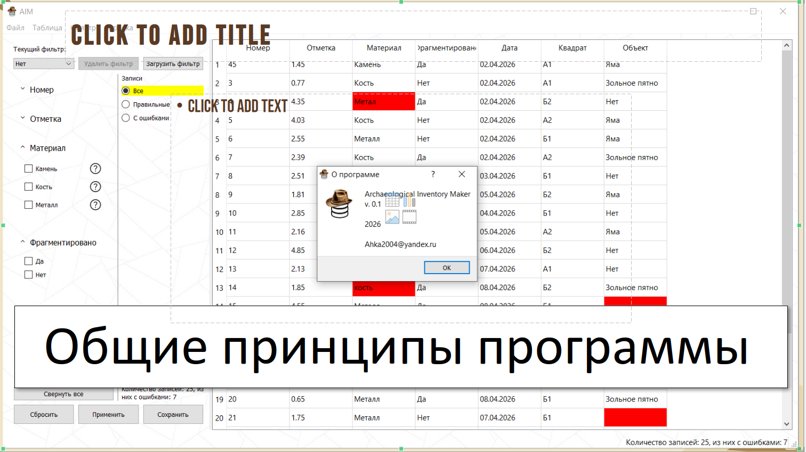
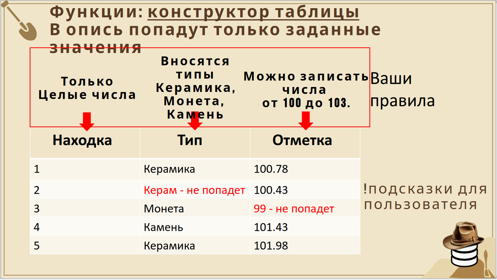
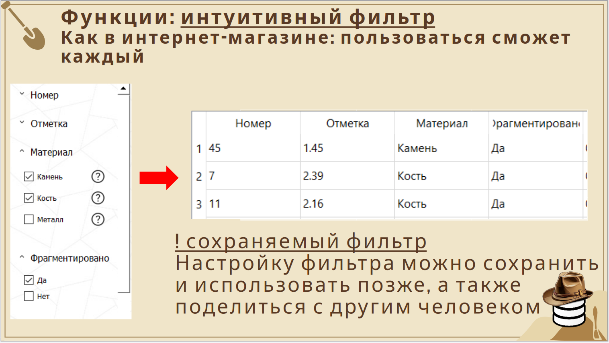
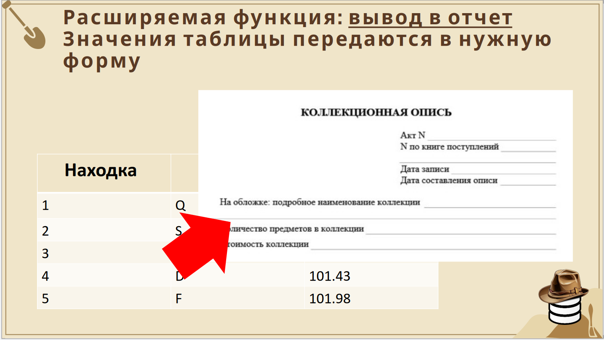

[AIM]
Archaeological Inventory Maker
Находки, таблицы, обмеры, списки, камеральные записи —
безошибочная, структурированная, единообразная опись
Версия 0.1 · 29 марта 2026 · Windows · Бесплатно
Archaeological Inventory Maker
Находки, таблицы, обмеры, списки, камеральные записи —
безошибочная, структурированная, единообразная опись
Версия 0.1 · 29 марта 2026 · Windows · Бесплатно
AIM — редактор описи находок в виде готового решения, учитывающего особенности составления археологических описей. Программа создаёт таблицу с контролем записей и учётом ошибок, исключая ошибки оператора.
Минимальный порог входа — не нужно ничего осваивать. Запускается мгновенно без установки, работает даже с флешки прямо на раскопе.
Волонтёрский проект, распространяется как freeware и рассчитан на широкое применение среди всех заинтересованных пользователей.
Вы задаёте правила: какие типы значений допустимы, какой диапазон чисел, какие варианты из списка. В опись попадут только заданные значения.
Некорректные записи сразу выделяются с расшифровкой ошибки. Видно что именно не так и почему запись не прошла валидацию.
Как в интернет-магазине — пользоваться сможет каждый. Фильтр можно сохранить и передать на другое рабочее место.
Вводите сокращения прямо в поле — программа расшифровывает коды в полные названия. Например: Q → кварц, S → стекло.
Значения таблицы передаются в нужную форму — коллекционную опись, полевой журнал или другой документ DOCX.
Импорт и экспорт в незакрытый формат CSV. Данные легко открыть в Excel или передать коллегам.
Быстрая сводка по отображаемой описи: количество записей, количество ошибок — всегда на виду.
Не требует установки и специальных навыков. Распакуйте архив — и начинайте работу в течение нескольких минут.
Сохраняйте и открывайте рабочие сессии. Структура таблицы и данные хранятся вместе.

Главное окно: таблица, панель фильтров, подсветка ошибочных записей

Конструктор таблицы — вы задаёте правила для каждого поля

Интуитивный фильтр с возможностью сохранения и передачи

Вывод данных в готовую форму — коллекционную опись
AIM предназначена для археологов и исследователей, которые ведут полевые описи артефактов. Подойдёт как для небольших раскопок, так и для крупных экспедиций с большим объёмом данных.
Нет. AIM работает без установки — просто распакуйте архив и запустите. Размер программы около 60 МБ. Можно запускать прямо с флешки на любом рабочем месте.
Нет. AIM работает полностью офлайн — это важно для полевых условий.
На данный момент — Windows. Поддержка других платформ планируется в будущих версиях.
Да. Сохраните таблицу Excel как CSV и импортируйте в AIM. Экспортированные данные также открываются в Excel. Прямой импорт XLSX планируется в следующих версиях.
Да, AIM полностью бесплатна и распространяется как freeware. Если хотите поддержать развитие — смотрите раздел ниже.
Сохраните фильтр в файл и передайте его — коллега загрузит его в свою копию программы. Фильтры хранятся в виде обычных JSON-файлов.
AIM активно развивается. Вот что готовится в следующих версиях:
Несколько таблиц в одной сессии со сквозным фильтром между ними.
Автоматическое создание этикеток для артефактов из данных активной таблицы.
Выпадающие списки, сниппеты, подсказки, групповой ввод, горячие клавиши.
Выгружаемое описание структуры и правил таблицы для документирования и передачи.
Новые специализированные типы и конструктор собственного типа данных.
Одновременная работа нескольких исследователей над одной описью через сервер.
AIM — волонтёрский проект. Ищем коллаборацию для дальнейшего развития возможностей программы.
Пользуетесь программой? Расскажите что работает хорошо, что неудобно, чего не хватает.
Если программа оказалась полезной — вы можете ускорить разработку новых версий.
Карта Сбер МИР:
+7 (952) 207-77-29 (Марунин М.В.)
Есть идеи, предложения или хотите помочь с разработкой?